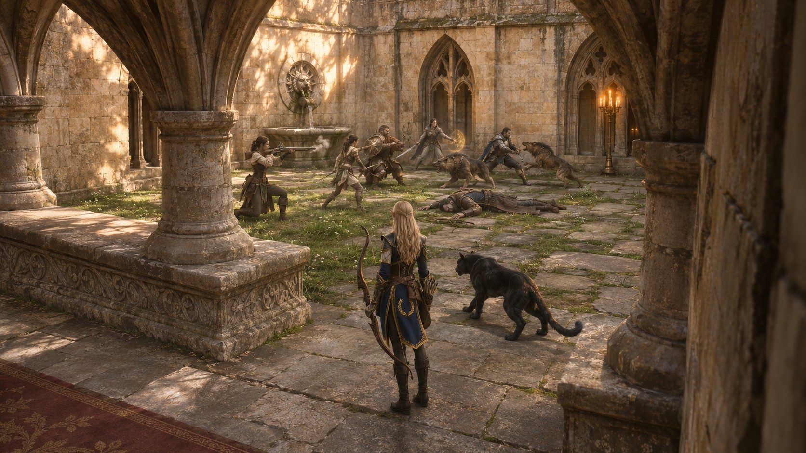

I ended yesterday at the Lion’s Pride with Brother Anton’s name in my journal. Today I learned what a man can ask of you with a few words on a page. Thirty Undead Ravagers, as it turns out.
There are bones in the south of Desolace big enough to mistake for part of the cliff. I kept looking up at them when I ought to have been watching the ground. I managed five Ravagers on my own. Twice the dead came back up where I’d already fought, and twice I fell. After the spirit healer put me back on my feet, I used my hearthstone and went home to Goldshire for repairs. By the time I’d been back to the valley and called it off a second time, I’d had quite enough of trying to do the whole thing myself.
Gawain Tenebris took me in with Aeladrine Dawnveil and Tanya Fialova, and Anashura Moonwhisper joined us once we were under way. I warned them that the centaurs were hostile to me. Tanya said they were hostile to her too. Gawain asked, “Oh... was I not supposed to kill them?” That settled how much diplomacy we were likely to get done.
Tanya had a better idea for the dead. Let the necromancers finish calling up their skeletons, she said. Those counted too. Toward the end Gawain was reminding me to pull Sylthara back when a necromancer began casting. Asking her to leave a perfectly good target alone takes more work than sending her in. We stayed until Gawain and Aeladrine got their last one. I’d gone back expecting a chore and found myself laughing in a place where I’d already died twice. I turned in the count, followed the next leg of Down the Scarlet Path, and took up In the Name of the Light.
Scarlet Monastery Library
It took us two tries to get a company through the door. Our first tank dropped out of contact, and I wanted to give him a moment to come back. In the end I relisted the group. Gwen Celese stayed, and Ashlyn Ardeshir, Amelie Ventcroix, and Roach Shieldhand joined us. Roach had to come all the way up from Ironforge. By the time he complained about running in metal armor, Ashlyn had already pointed out that none of us would ever skip leg day.
Once we were inside, Roach told us to hold our ground and let him bring the Scarlets back to us. That gave me room for the bow and Sylthara room to go in. Amelie was a marksman with a gun and no beast at her side. In those close halls, I could hear exactly when she fired. I kept an ear on her and an eye on where Sylthara had gone.
“Release the hounds!” Loksey called. The houndmaster went down first, but his three tracking hounds were still on their feet. From under the stone arch I could see the others still fighting in the grass between the flagstones. There was work left to do after the man who started it stopped moving. A little farther in, after another lively pull, Ashlyn gave a delighted screech. Amelie’s answer was to reload.
The chaplains and diviners gave us a worse turn. Roach praised a Lay on Hands that bought him a little more time, then went down all the same. He told us he believed in us while we were still fighting. We finished the pack, and Gwen raised him. I said it was easy once we had our breathing back. Roach admitted he might have got overzealous. Then Ashlyn told us something I hadn’t expected to hear in those halls. “I was almost a Scarlet once. Now...I use their power against them.” I thought about that while we made our way past the shelves.
We took turns at the copy of Mythology of the Titans, waiting for it to be available again. Ashlyn had told us the key would be beyond the last boss, and she pointed out the box before we went in. Arcanist Doan met us with bursts of arcane magic. Then he turned Sylthara into a sheep. Before I could do a thing about it, he called down fire on the room. His blast missed me, caught Sylthara, and broke the spell he’d put on her. She went right back to the fight. When Doan fell, I took the Scarlet Key. The entry guards had already come back by the time we headed out. Ashlyn called “Behind!” and we fought our way the rest of the way clear.
Sylthara reached thirty-six in the Library. I’d told the company before we went in that I had something to teach her if she grew enough on the run. Afterward I finally put those earlier lessons to use with her. I delivered the book and ended the day back at the Lion’s Pride in Goldshire. I’m glad to put my bow down. I expect Sylthara would be perfectly happy if I went and picked it up again.